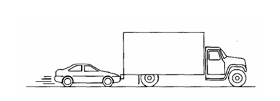

Um caminhão grande quebra na estrada e recebe um empurrão de volta para a cidade por um carro compacto pequeno, como mostrado na figura abaixo
Após o carro alcançar a velocidade constante de cruzeiro na qual o motorista deseja empurrar o caminhão,